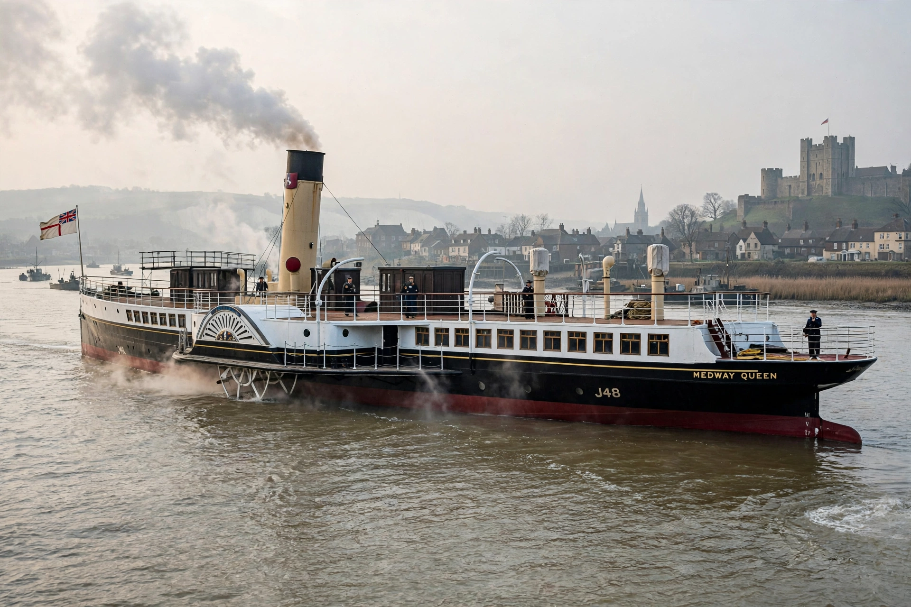

PS Medway Queen is a paddle-driven steamship built in 1924 for service on the River Medway and Thames estuary. She is famous as one of the 'little ships' of the Dunkirk evacuation, making seven trips in Operation Dynamo and rescuing an estimated 7,000 men — earning her the nickname 'Heroine of Dunkirk'.

Built by the Ailsa Shipbuilding Company at Troon for the New Medway Steam Packet Company, she carried excursion passengers between Medway towns, Southend and Herne Bay. Requisitioned as a naval minesweeper in 1939 (HMS Medway Queen), she was diverted to Dunkirk in May 1940. Her crew was credited with shooting down enemy aircraft, and her captain received the Distinguished Service Cross.
After post-war service including as a floating restaurant on the Isle of Wight, she sank and decayed before being rescued by the Medway Queen Preservation Society. A Heritage Lottery-funded rebuild at Bristol produced a new riveted hull, relaunched in 2013, and she is on the National Historic Ships register.